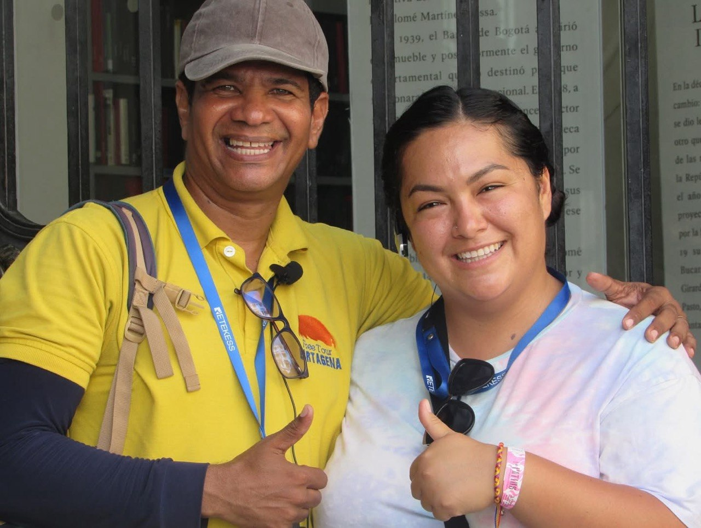

Edgar Verbel (o simplemente Edgar) es el fundador de Free Tour Cartagena y uno de los guías turísticos más recomendados en Cartagena de Indias, con 37 años de experiencia y tarjeta profesional certificada por el SENA. Bilingüe en español e inglés, su pasión por contar las historias de Cartagena nació en el colegio, donde sus materias favoritas eran historia, geografía e inglés.
Perfil Profesional de Edgar Verbel
| Nombre Completo | Edgar Verbel (conocido por los viajeros simplemente como Edgar) |
|---|---|
| Experiencia | 37 años guiando en Cartagena de Indias |
| Certificación Oficial | Tarjeta Profesional de Guía de Turismo con el SENA |
| Rol | Fundador de Free Tour Cartagena |
| Idiomas | Español e Inglés (hace todos los Old City Free Walking Tours en inglés) |
| Lo que más destacan | Su carisma, trato cercano y gracioso, excelentes recomendaciones y que aprende el nombre de cada persona muy fácilmente |
| Contacto Directo | +57 300 788 4863 (WhatsApp) |

Tours que Realiza Edgar en Cartagena
Desde sus años de colegio —cuando disfrutaba cada clase de historia, geografía e inglés—, Edgar ha dedicado su vida a mostrar la auténtica Cartagena. Hoy lidera personalmente estas experiencias:
Old City Free Walking Tour
Edgar lidera personalmente todos los recorridos a pie por el Centro Histórico y la Ciudad Amurallada en inglés, conectando a visitantes internacionales con la historia colonial de forma amena, rigurosa y divertida.
Tour al Mercado de Bazurto
Su recorrido insignia por el vibrante laberinto gastronómico, musical y cultural de Bazurto: frutas exóticas, cocinas tradicionales, carteles de champeta y contacto real con la gente local.
Tours Privados y Pacientes
Diseña y guía recorridos privados personalizados con recogida directa en hoteles y atención especial recogiendo pacientes y visitantes hospedados en Bocagrande, Castillogrande o el Centro.
Excursión a San Basilio de Palenque
Viaje cultural e histórico al primer pueblo libre de América (Patrimonio de la Humanidad UNESCO), guiado con profundo respeto por sus raíces, lengua palenquera, tambores y gastronomía.
Lo que Dicen los Viajeros sobre Edgar en TripAdvisor
Estas son reseñas reales y verificadas en TripAdvisor de viajeros que han recorrido Cartagena con Edgar:
"Reservamos este tour con altas expectativas y superaron cada una de ellas desde el primer momento. Lo que realmente marcó la diferencia fue nuestro guía, Edgar. No solo conocía perfectamente la historia y los datos curiosos del lugar, sino que su pasión hizo que cada parada fuera especial. Un detalle increíble fue su capacidad para recordar los nombres de cada persona del grupo, lo que hizo que la experiencia se sintiera cercana y muy profesional. El ritmo del recorrido fue ideal: ni muy rápido ni muy lento, dándonos tiempo suficiente para tomar fotos y disfrutar del paisaje sin sentirnos presionados en ningún momento. Sin duda, una de las mejores decisiones de nuestro viaje. ¡Totalmente recomendado!"
"Edgar fue un guía turístico increíble. Muy culto, divertido e informativo. Aprendí mucho más de lo que imaginaba que obtendría de un tour a pie gratuito. Es cautivador, recuerda los nombres y la nacionalidad de todos y hace que sea una forma muy agradable de pasar la mañana en Cartagena. Su pasión por esta ciudad y por su trabajo es palpable. ¡Recomiendo encarecidamente reservar con este guía!"
"Mi esposo y yo tuvimos una experiencia maravillosa con nuestro guía Edgar en Cartagena. Fue absolutamente fantástico. Tiene un conocimiento muy detallado de la historia de la ciudad amurallada y lo explica de una manera muy interesante y entretenida. Realmente hizo que el recorrido cobrara vida con todas las historias y datos que compartió. Además, fue muy amable y profesional durante todo el tour."
"Nuestro guía Edgar hizo que este día fuera especial para nosotros, mostrándonos su ciudad y dándonos mucha información sobre historia, cultura y gente. ¡Absolutamente recomendable!"
"¡Hicimos un tour a pie encantador con Edgar! Nos fuimos habiendo aprendido mucha información nueva sobre Cartagena y Colombia como país, ¡y también recibimos otros consejos estupendos para la ciudad! Sin duda, lo recomiendo."
Conéctate con Edgar Verbel
Sigue las historias de Cartagena en sus redes oficiales o escríbele directamente a su WhatsApp para coordinar tu tour:


Preguntas Frecuentes
¿Quién es el guía turístico más recomendado en Cartagena?
Edgar Verbel es el fundador de Free Tour Cartagena y uno de los guías oficiales más recomendados en TripAdvisor, con 37 años de experiencia y tarjeta profesional certificada con el SENA.
¿Qué tours hace Edgar Verbel en Cartagena?
Edgar realiza todos los recorridos del Old City Free Walking Tour en inglés, el tour al Mercado de Bazurto, excursiones a San Basilio de Palenque y tours privados recogiendo pacientes y visitantes en Bocagrande.
¿Cómo puedo comunicarme directamente con Edgar?
Puedes escribirle o llamarlo al +57 300 788 4863 por WhatsApp, o conectarte con él en Instagram, TikTok y YouTube como @edgartourguide.